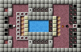

Шарикология!Здесь можно прочесть о последних приключениях нашего «новичка», о его опыте и размышлениях!Уровень МесяцаПомощьСоздание уровней, перевод, сообщения об ошибках, написание программы.Нам нужна Ваша помощь. Ознакомьтесь с разработкой. Enigma это игра-головоломка, примером подражания для которой стали Oxyd на платформе Atari ST и Rock'n'Roll на платформе Amiga. Цель игры состоит в поиске открытых пар камней-оксидов одинакового цвета. Просто? Да. Легко? Конечно нет! Скрытые ловушки, огромные лабиринты, лазерные лучи и прежде всего бесчисленные причудливые головоломки, обычно перекрывающие Вам прямой путь к камням-оксидам… Если Вы ещё не знакомы с Enigma, Вы можете взглянуть на несколько скриншотов или заглянуть в руководство пользователя. Enigma доступна для Windows, Mac OS X, большинства разновидностей Linux и других современных Unix'ов. Enigma это свободное программное обеспечение и может распространяться и изменяться на условиях General Public License.
Последние новостиApril 2 2013: Enigma 1.20 ReleasedWe are pleased to announce the release of Enigma 1.20 for Windows and Linux, not yet 6 years since our last stable release. Enigma 1.20 comprises:
You can find Enigma 1.20 for Windows and Linux in our
download section. Unfortunately,
we cannot yet offer a version for OS X, this will be our
next goal.
Have fun! Raoul Bourquin and Andreas Lochmann 28 ноября 2010: Рождественский календарь EnigmaВ этом году мы с гордостью представляем первый Рождественский календарь Enigma
с 24 новыми – ранее не издававшимися – уровнями. Согласно правильному
Рождественскому календарю, первые двери откроются как раз 1-го декабря. За ними
скрывается первый уровень. Каждый день ещё один уровень будет ждать выхода в свет
из-за закрытых дверей. 24 декабря 2009: Волшебные моменты EnigmaПосле первого трейлера Enigma 1.01, представленного ранее в этом году, мы с гордостью представляем другое захватывающее дух видео. Наслаждайтесь просмотром мастерского прохождения уровней мировыми рекордсменами. Мы собрали все видеофрагменты на новой странице видеофрагментов, с которой можно загрузить и просмотреть видеофрагменты. Кроме того, в первый раздел меню слева была добавлена ссылка на эту страницу. 25 мая 2007: Выпущена Enigma 1.01Enigma 1.01 включает исправление ошибок и добавление уровней, а также дополнительные возможности. Спасибо за все отзывы, которые были учтены в этом выпуске. Список исправлений и улучшений прилагается:
Пользуясь версией 1.01, Вы можете оценить обновлённые версии уровней не так, как в предыдущем релизе, в котором могли быть "обходные пути" решения. Пожалуйста, продолжайте присылать нам Ваши отзывы, отправляя копии Вашего файла результатов, как это описано в регистрации результатов. Как обычно новая версия доступна на странице загрузки (доступен Mac OS X!). Желаем хорошо провести время! Все новостиОстальные новости можно прочесть на нашей странице архива новостей. |